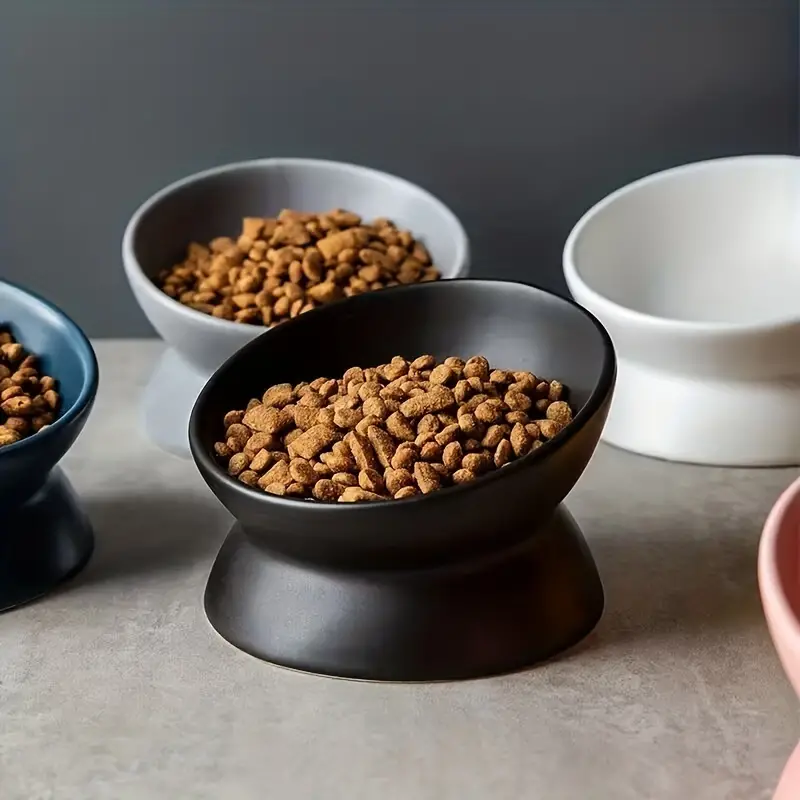
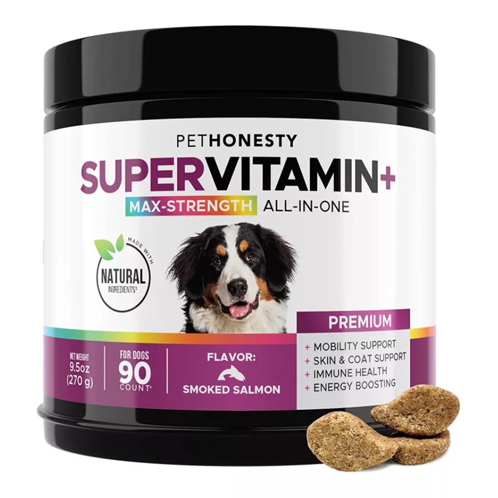
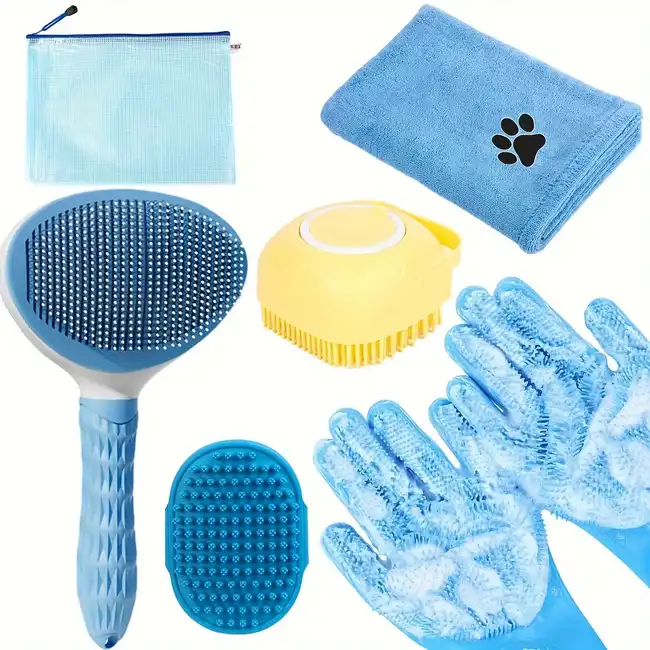
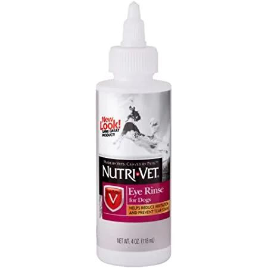
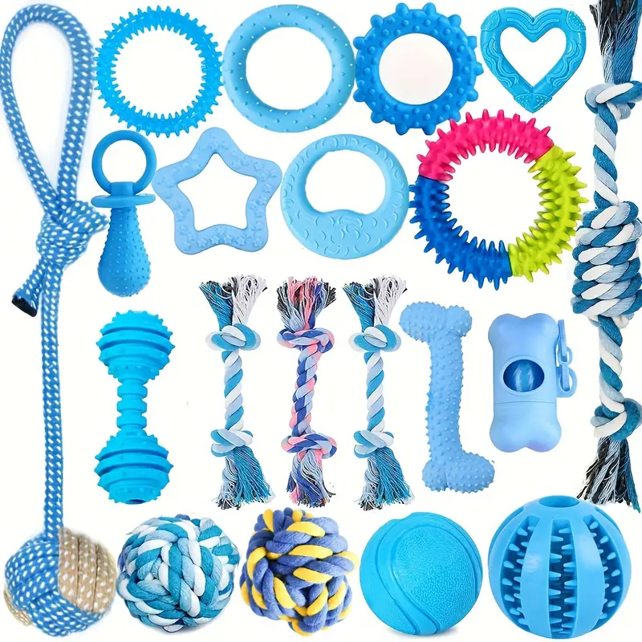

Alimentos para Cachorros y Gatitos
Los cachorros y gatitos tienen necesidades nutricionales específicas para apoyar su rápido crecimiento. Ofrecemos alimentos formulados para proporcionar la cantidad adecuada de proteínas, vitaminas y minerales, asegurando que tu mascota tenga un desarrollo saludable.
Saber más
Si tu mascota tiene una condición médica que requiere una dieta especial, ofrecemos una variedad de alimentos terapéuticos. Ya sea que necesite controlar su peso, manejar una enfermedad renal o reducir alergias, nuestras dietas especializadas están diseñadas para apoyar su salud a largo plazo.
Saber más

Suplementos para Articulaciones
A medida que las mascotas envejecen, es común que desarrollen problemas en las articulaciones. Nuestros suplementos para articulaciones contienen ingredientes como glucosamina y condroitina, que ayudan a mantener la movilidad y reducir el dolor en las articulaciones.
Saber más
Suplementos para la Salud Digestiva
Una digestión saludable es clave para el bienestar general de tu mascota. Ofrecemos suplementos que contienen probióticos y enzimas digestivas, diseñados para mejorar la absorción de nutrientes y prevenir problemas digestivos como el estreñimiento o la diarrea.
Saber más

Champús y Acondicionadores
Mantener el pelaje de tu mascota limpio y saludable es esencial. Ofrecemos una variedad de champús y acondicionadores diseñados para diferentes tipos de piel y pelaje. Desde fórmulas hipoalergénicas hasta tratamientos anti-pulgas, tenemos el producto adecuado para tu mascota.
Saber más

Cuidado de Oídos y Ojos
La higiene de los oídos y ojos es fundamental para prevenir infecciones. Disponemos de soluciones limpiadoras suaves pero efectivas que ayudan a mantener estos sensibles órganos limpios y libres de irritaciones.
Saber más
La seguridad y comodidad de tu mascota son nuestra prioridad. Ofrecemos una variedad de collares y correas duraderas y estilizadas, diseñadas para diferentes tamaños y razas. Cada producto está fabricado con materiales de alta calidad para garantizar la máxima durabilidad.
Saber más

Juguetes para Mascotas
El juego es una parte esencial del bienestar mental y físico de tu mascota. Disponemos de una selección de juguetes interactivos y resistentes, diseñados para estimular la mente y el cuerpo de tu mascota, ayudando a mantenerla activa y entretenida.
Saber más